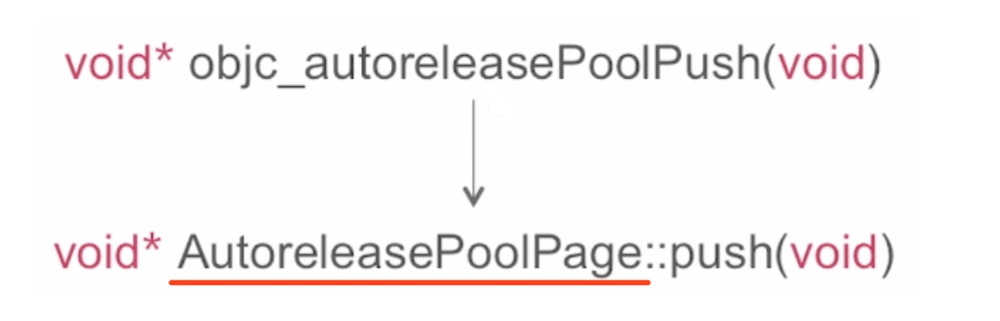
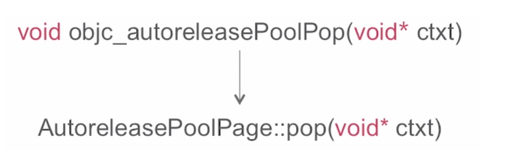
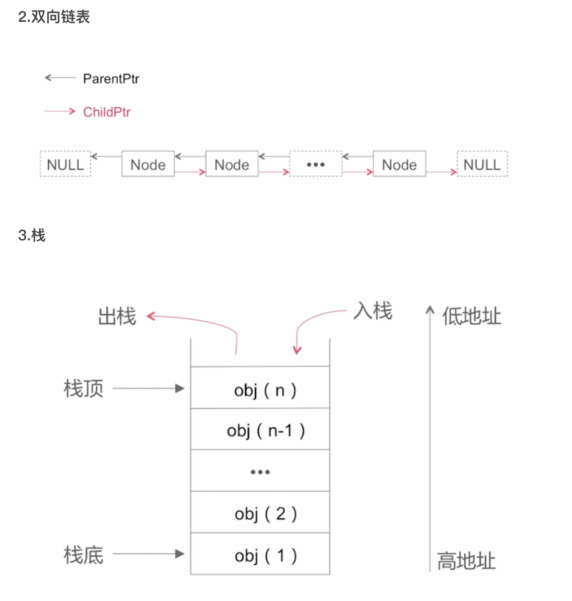
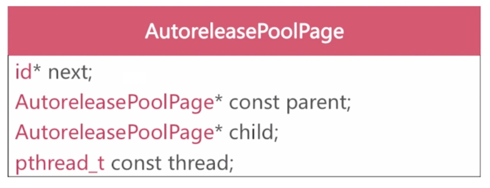
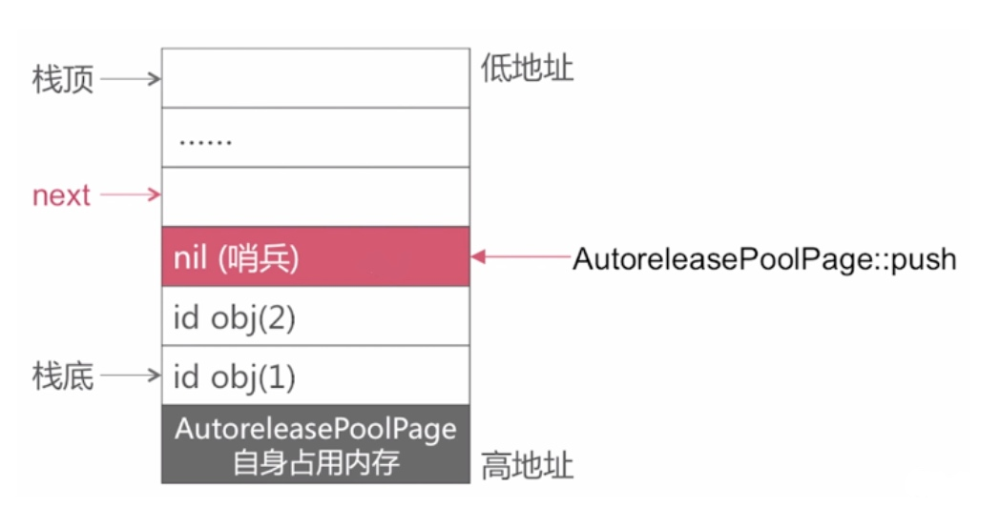
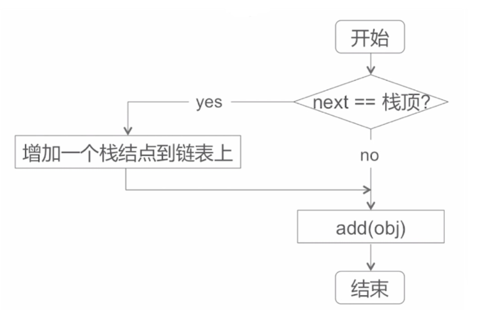
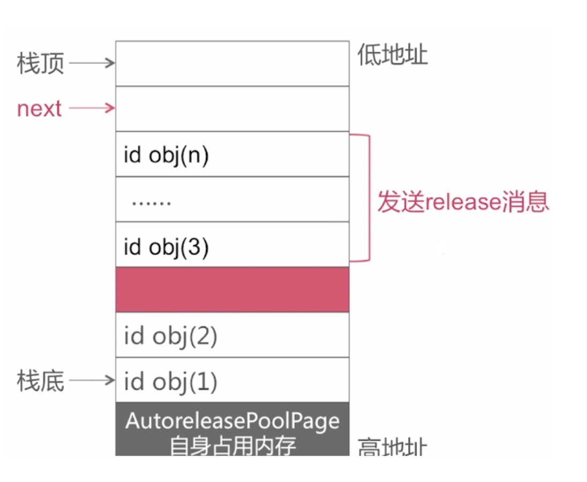
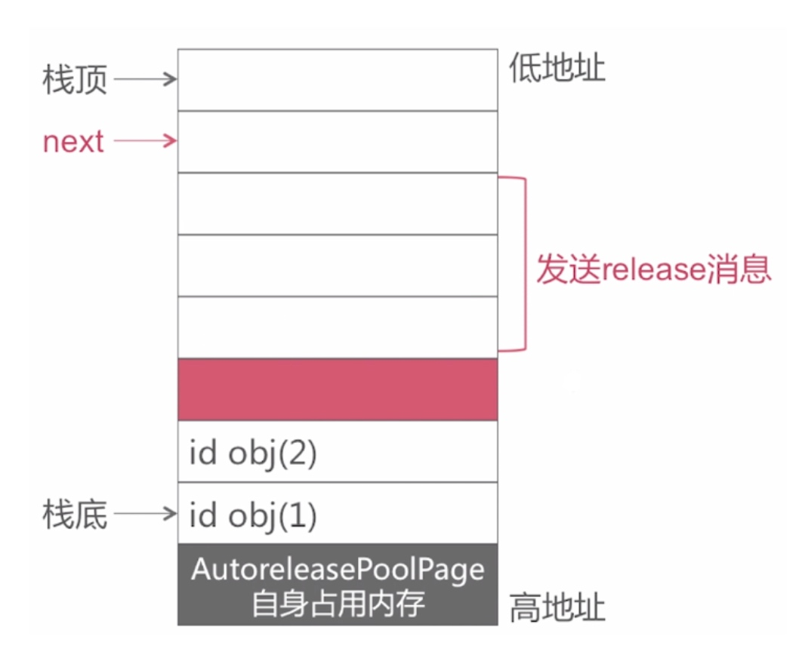
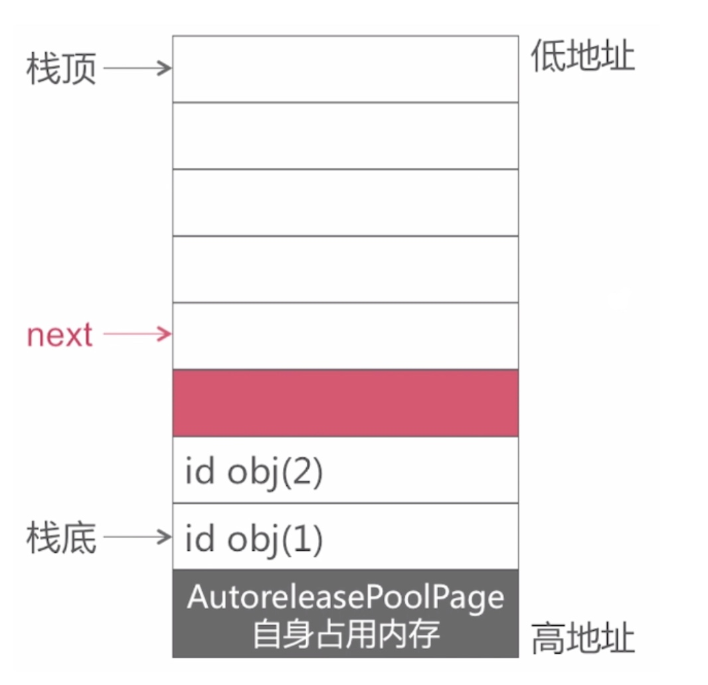
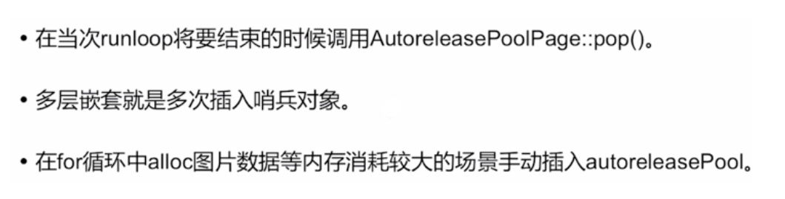

先看一段代码
- (void)viewDidLoad
{
[super viewDidLoad];
NSMutableArray *array = [NSMutableArray array];
NSLog(@"%@",array);
}
在 viewDidLoad 方法中通过 [NSMutableArray array] 创建了一个数组对象，然后在控制台打印它的值
思考：这个 array 对应的内存是在什么时机释放的？
思考：AutoreleasePool 的实现原理是怎样的？
思考：AutoreleasePool 为何可以嵌套使用？
自动释放池
@autoreleasepool{} 经过编译器编译后会变成什么?
编译器会将 @autoreleasepool{} 改写为：
void *ctx = objc_autoreleasePoolPush();
{}中的代码
objc_autoreleasePoolPop(ctx)
第一段是 objc_autoreleasePoolPush 这个函数调用，是没有参数的，返回值是一个无类型的指针
中间是花括号中所添加的代码
之后会调用 objc_autoreleasePoolPop 函数，这个函数的入参就是前一个函数 objc_autoreleasePoolPush 返回结果
objc_autoreleasePoolPush 的内部实现

objc_autoreleasePoolPop 的内部实现

自动释放池的数据结构

AutoreleasePoolPage (C++的类)

这个类的组成结构主要有四个成员变量
- 第一个是 id* 类型的 next，实际上就是指向栈当中下一个可填充位置
- 之后是两个 AutoreleasePoolPage 类型的成员变量，分别为 parent 和 child，也就是双向链表中的父指针和孩子指针
- 还有一个成员变量 pthread_t 类型的，所以说 autoreleasepool 是和线程一一对应的，就是从这个结构当中的 Thread 成员变量体现出来的
AutoreleasePoolPage 的结构

最下边是 AutoreleasePoolPage 自身所占有的内存，上面这些可以用来存储花括号中填充的 autorelease 对象，同样的这个栈是向下增长的，所以下面是高地址，上面是低地址，有一个 next 指针也就是 AutoreleasePoolPage 这个结构当中的一个成员变量，指向当前栈的一个空的位置，比如说现在在进行一个入栈操作，就可以添加到 next 指针所指向的位置
AutoreleasePoolPage::push 方法实现

如果发生了一个 AutoreleasePoolPage::push 操作，会把当前 next 位置置为 nil ，称他为哨兵对象，然后将 next 指针指向下一个可入栈的位置，这就是 AutoreleasePoolPage 的 push 方法的实现过程
实际上每次进行一个 AutoreleasePool 的代码块的创建，相当于是不断的在栈当中去插入哨兵对象
[ obj autorelease ] 方法系统内部实现

比如说调用了一个对象的 autorelease 方法
首先会判断当前 next 指针是否指向了栈顶，如果没有指向栈顶就直接把这个对象添加到当前这个栈的 next 位置，结束流程，假如当前 next 已经指向了栈顶，这个时候当前这个 AutoreleasePoolPage 就没有办法再装新的 autorelease 对象了，于是就需要增加一个栈节点拼接到到链表上，之后在新的栈上面去添加对象最终结束流程
AutoreleasePoolPage::pop 方法实现
- 根据传入的哨兵对象找到对应的位置
- 给上次push操作之后添加的对应一次发送release消息
- 回退next指针到正确位置
首先对 pop 流程做一个简单的说明：
- 在进行 pop 操作的时候会根据传入的哨兵对象来找到 pop 的最终位置，这个所谓的哨兵对象就是前面提到的 objc_autoreleasePoolPush 函数的返回值，实际上返回的就是栈当中对应的哨兵地址，pop 操作和 push 操作是一一对应的，那么要 pop 回哪个位置实际上是 pop 回它所指向的前一个哨兵对象
- 然后给上次 push 操作之后所添加的对象依次发送 release 消息
- 之后回退 next 指针到正确的位置

假如说 next 指针指向这个位置，然后此时调用了 AutoreleasePoolPage::pop 操作，那么实际上要给这个红括号包含的这些对象依次发送 release 消息

发送 release 之后，这些对象就会从当前栈中被清除掉

清除之后会把 next 指针指向一个正确的位置，这个就是 pop 的整个过程
自动释放池总结

在每一 RunLoop 的循环过程当中，都会在它将要结束的时候对前一次创建的 autoreleasepool 进行 pop 操作，同时会 push 进来一个新的 autoreleasePool，所以说在 viewDidLoad 方法中通过 [NSMutableArray array] 所创建的这个数组对象是在当次 RunLoop 将要结束的时候，然后调用 AutoreleasePoolPage::pop () 方法的时候，把对应的 array 对象调用它的 release 方法，然后对它进行释放
关于AutoreleasePool 为何可以嵌套使用，实际上多次嵌套调用就是多次插入哨兵对象，比如说我们每次进行一个 @autoreleasepool{} 代码块的创建的时候，系统就会为我们进行哨兵对象的插入，然后完成新的 autoreleasepool 的创建，这个 autoreleasepool 的创建实际上创建了一个新的 page，假如说当前 page 还没有满的话就不用创建这个 page ，所以说我们所说的先创建的一个 autoreleasepool 对应的在底层实现就是插入了一个哨兵对象，所以当然是可以直接多次嵌套调用的
autoreleasePool 使用场景的问题：在什么场景下需要手动创建 autoreleasePool，比如说在 for 循坏当中 alloc 出大量的图片数据，图片数据对内存消耗非常大，需要在 for 循环内部创建一个 autoreleasepool ，每一次 for 循环都进行一次内存的释放来降低内存的峰值，防止一些内存消耗过大所导致的一些问题
实现原理：autoreleasePool实现原理就是以栈为节点，通过双向链接形式组合而成的一个数据结构
补充
ARC时代，系统自动管理自己的autoreleasepool，runloop就是iOS中的消息循环机制，当一个runloop结束时系统才会一次性清理掉被autorelease处理过的对象，其实本质上说是在本次runloop迭代结束时清理掉被本次迭代期间被放到autorelease pool中的对象的。至于何时runloop结束并没有固定的duration。
方便是方便了，但是有些情况下，我们还是需要手动创建自动释放池，那么，什么时候呢？
如果你正在编写不基于UI 框架的程序，比如命令行工具。
如果你编写的循环创建了很多临时对象。
你可以在循环中使用自动释放池block，在下次迭代前处理这些对象。在循环中使用自动释放池block，有助于减少应用程序的内存占用。
你生成了一个辅助线程。
一旦线程开始执行你必须自己创建自动释放池。否则，应用将泄漏对象。